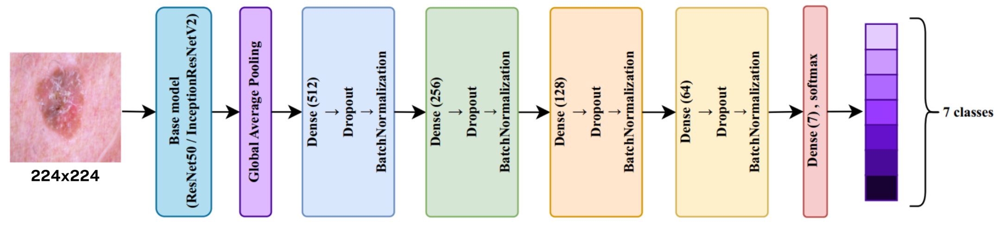
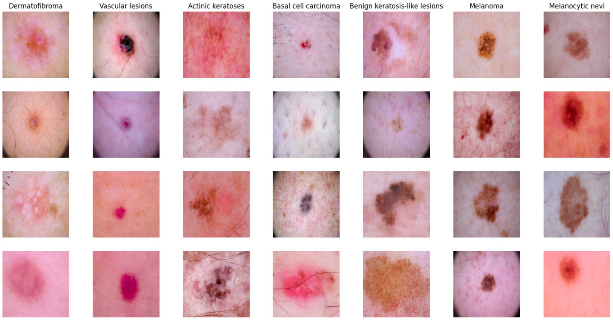
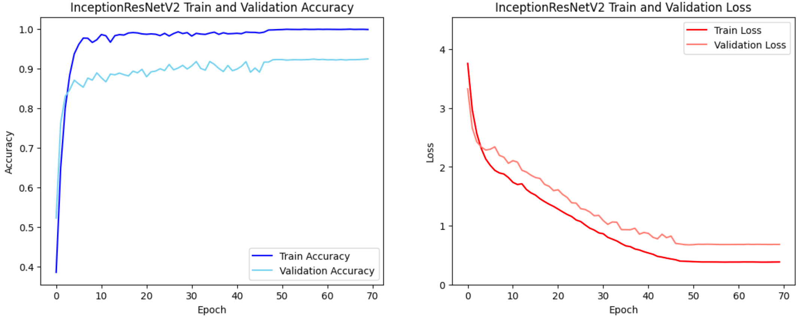
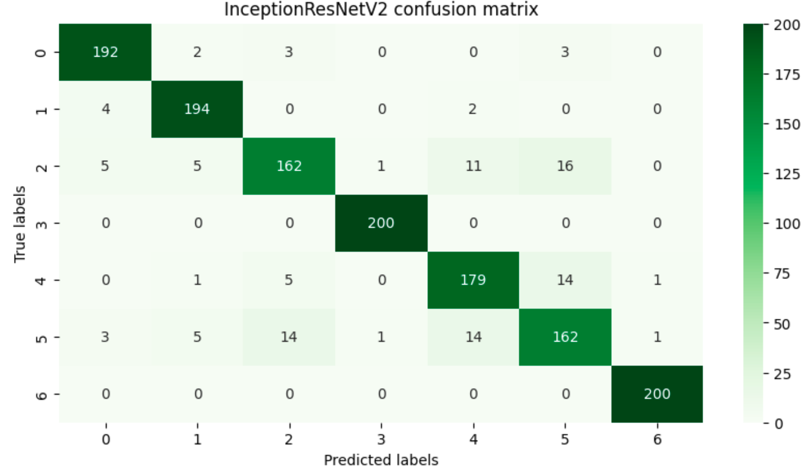
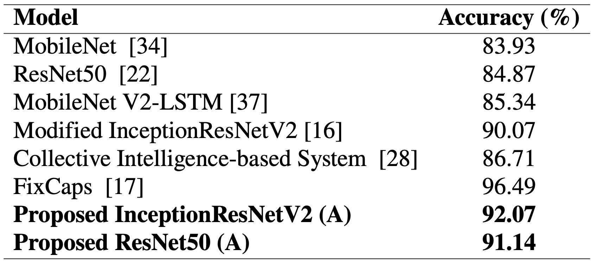

Projects · Computer Vision · Medical Imaging (Research)
Skin Lesion Classification
Comparing two CNN architectures on a class-imbalanced dermoscopy dataset — a research project, not a clinical diagnostic tool.

Problem
Why this matters
Skin lesion images span 7 diagnostic categories with very uneven representation in the real world — a handful of classes dominate, which is exactly the setting where a naive classifier learns to just predict the majority class. The goal here was narrower and more honest than "detect skin cancer": develop and compare deep learning models for 7-class skin lesion classification, and see how much the choice of architecture and fine-tuning strategy actually matters on an imbalanced medical imaging dataset. This is a research/learning project — it has not been clinically validated and isn't a diagnostic tool.
Method
How it was built
Two backbone architectures were compared, each in two configurations: (A) fine-tuning the full network, and (B) training only the newly added classifier layers on top of a frozen pretrained backbone. Both used a customized fully-connected head for the 7-class output.

Classifier head on top of the pretrained backbone: Global Average Pooling into four Dense+Dropout+BatchNorm blocks, ending in a 7-class softmax.
Data
Dataset
HAM10000: 10,015 dermoscopic images across 7 lesion classes. To address class imbalance, the training set was augmented up to 14,000 images (2,000 per class), with images resized to 128×128 pixels.

Sample dermoscopy images across all 7 lesion classes in HAM10000.
Metrics
Best result: InceptionResNetV2, full fine-tune
92.07%
Accuracy (InceptionResNetV2, config A — full fine-tune)
91.99
F1-score (same configuration)
+17.8 pts
Accuracy gained over the frozen-backbone variant of the same model (74.29%)

InceptionResNetV2 training/validation accuracy and loss over 70 epochs, config A (full fine-tune).

InceptionResNetV2 confusion matrix on the test set (config A, full fine-tune).
Learnings
What the comparison showed
Full fine-tuning clearly beat training only the classifier head, for both architectures: 92.07% vs. 74.29% accuracy for InceptionResNetV2, and an even wider 91.14% vs. 37.07% for ResNet50. The frozen pretrained features weren't specialized enough for dermoscopy images on their own — unlocking the whole network to adapt was necessary, even though that costs more compute and carries more overfitting risk on a dataset this size.

Accuracy against literature baselines on the same task — both proposed configurations (92.07% / 91.14%) beat MobileNet, ResNet50, MobileNetV2-LSTM, and the Modified InceptionResNetV2 baseline.